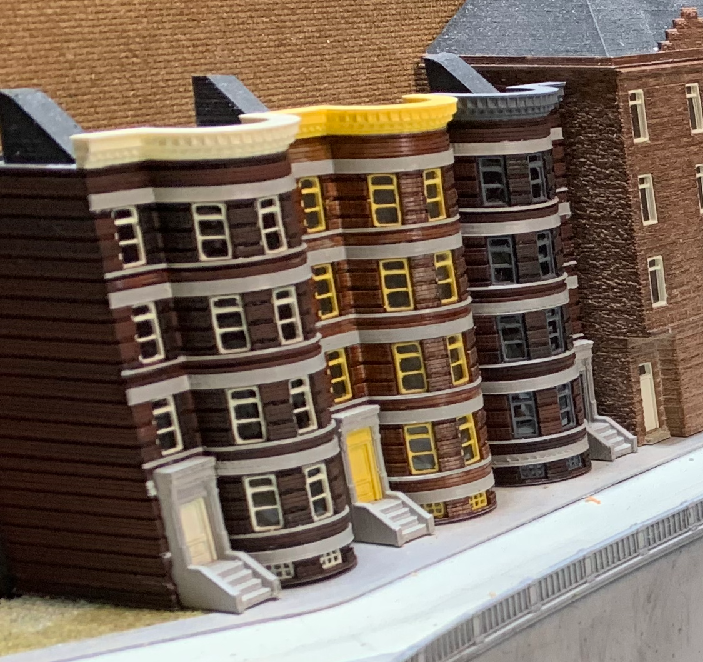
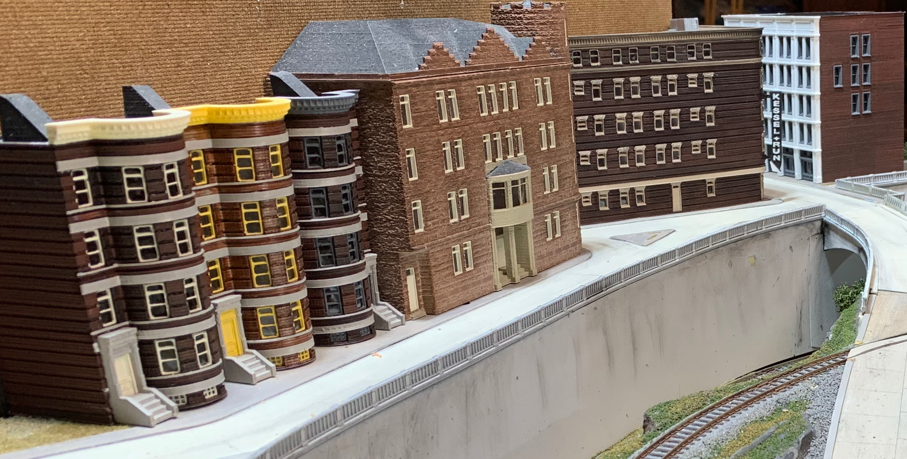
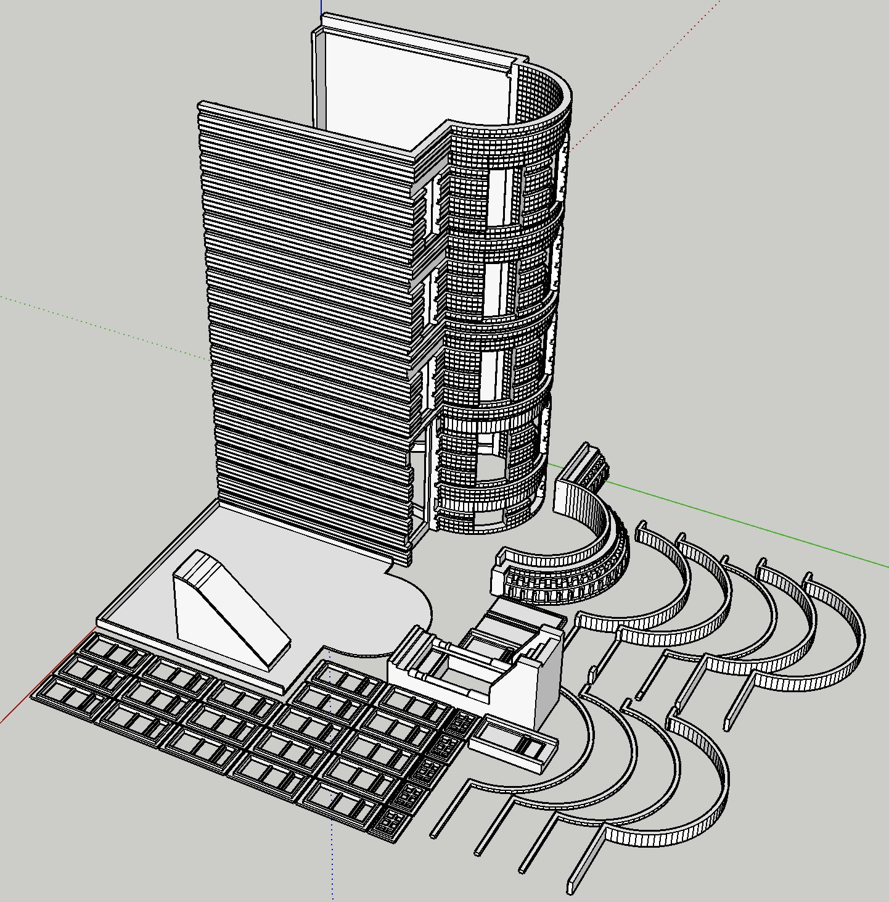

The Turret Apartments

The “Turret Apartments” structure was designed from scratch, 3D printed, painted, and assembled over the course of three evenings and a Saturday morning. I needed a medium relief structure to populate a street along an edge of my layout.
| Model Rendered in Blender | Printed & Assembled |
|---|---|
 |
 |
Home on the Layout

The structure next door is St. Rita’s. There is a brief article about designing and printing St. Rita’s.
Inspiration
I usually find inspiration from the structures I see around me. Sometimes, I fall into a Internet rabbit hole searching for architecture that suits my layout. This time, my search popped up the web site of a kindred spirit. The Railroad Connection sells 3D printed models in various scales. I was inspired by The Railroad Connection “Brownstone Building Brooklyn NY”
Design
I create my own designs tailored for specific locations on my layout and the capabilities of my 3D printer. I use the free SketchUp Make 2017 program for most aspects of the design and use the free Blender program for final processing and export as a .STL file that can be printed.
